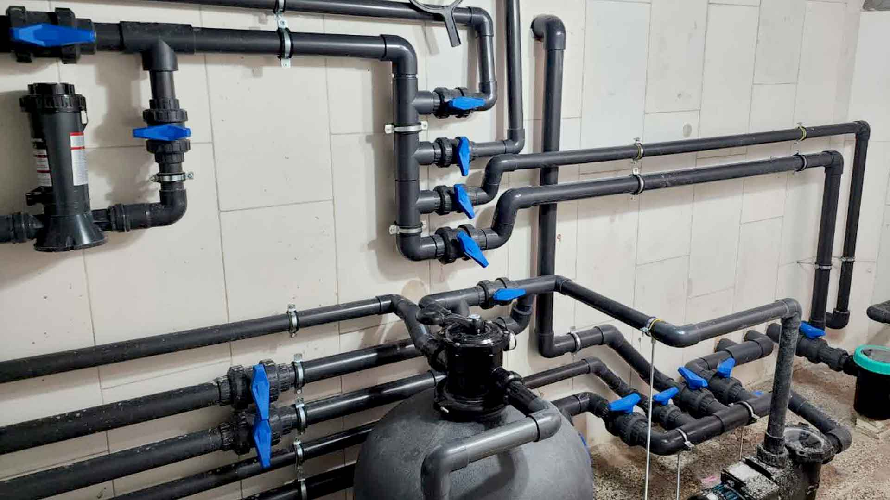

لوله و اتصالات استخری یکی از مهمترین بخشهای سیستم گردش آب استخر محسوب میشوند. عملکرد صحیح پمپ، فیلتر تصفیه و تجهیزات جانبی، وابستگی زیادی به کیفیت و انتخاب صحیح مسیر لولهکشی دارد.
در میان تجهیزات مورد استفاده در پروژههای استخری، لوله و اتصالات استخری ویسپار با تنوع سایز و طراحی مناسب برای سیستمهای گردش آب، گزینهای کاربردی برای اجرای مسیرهای انتقال آب استخر و جکوزی محسوب میشود.
مزایای لوله و اتصالات استخری ویسپار
لولههای استخری ویسپار برای استفاده در سیستمهای گردش آب استخر طراحی شدهاند و ویژگیهای مهمی مانند مقاومت مناسب در برابر فشار کاری، شرایط محیطی و مواد مورد استفاده در تصفیه آب دارند.
- مقاومت مناسب در برابر فشارکاری سیستمهای استخری
- مناسب برای انتقال و گردش آب در استخر و جکوزی
- مقاومت در برابر شرایط شیمیایی آب استخر
- سطح داخلی مناسب برای کاهش مقاومت جریان آب
- قابلیت استفاده در کنار تجهیزات تصفیه آب
اهمیت کیفیت لوله در سیستم گردش آب
در سیستمهای استخری، کیفیت لوله تأثیر مستقیمی بر عملکرد تجهیزات دارد. انتخاب لوله مناسب میتواند باعث کاهش مشکلاتی مانند نشتی، افت فشار و کاهش راندمان سیستم شود.
- کمک به حفظ جریان مناسب آب در مسیر لولهکشی
- کاهش احتمالی نشتی در سیستم گردش آب
- افزایش دوام شبکه لولهکشی در شرایط کاری مداوم
ویژگیهای لوله و اتصالات استخری ویسپار
لوله و اتصالات استخری ویسپار برای استفاده در مسیرهای انتقال و گردش آب طراحی شدهاند و ویژگیهای زیر را ارائه میدهند:

- تنوع سایز مناسب برای پروژههای مختلف استخری
- مقاومت مناسب در برابر فشار کاری سیستم
- هماهنگی با تجهیزات گردش و تصفیه آب
- مقاومت مناسب در برابر شرایط شیمیایی آب استخر
- کمک به اجرای یکپارچه سیستم لولهکشی
برای مشاهده قیمت بهروز لوله و اتصالات استخری ویسپار
مشاهده لیست قیمت ویسپارکاربردهای لوله و اتصالات ویسپار
لوله و اتصالات استخری ویسپار در بخشهای مختلف سیستم گردش آب استخر مورد استفاده قرار میگیرند:
- مسیر ورودی خروجی پمپ استخر
- خطوط انتقال آب تصفیه شده
- اتصال تجهیزات فیلتراسیون
- سیستم گردش آب جکوزی
- پروژههای استخری خانگی و عمومی
انواع اتصالات استخری ویسپار
اتصالات استخری ویسپار برای ایجاد مسیرهای مختلف لولهکشی و اتصال تجهیزات سیستم گردش آب استفاده میشوند:
- زانو برای تغییر مسیر لولهکشی
- سهراهی برای ایجاد انشعاب
- انواع شیرآلات مورد استفاده در سیستم گردش آب
- رابط برای اتصال لولهها
- تبدیل برای اتصال لولهها با اندازههای مختلف
- اتصالات تکمیلی موردنیاز برای اجرای سیستم لولهکشی استخر
راهنمای انتخاب لوله و اتصالات استخری ویسپار
لولههای استخری ویسپار در سایزبندیهای مختلف تولید میشوند تا امکان استفاده در پروژههای متنوع استخری و جکوزی فراهم شود. انتخاب سایز مناسب باید بر اساس شرایط اجرایی پروژه، حجم آب استخر، توان پمپ، طول مسیر لولهکشی و تجهیزات متصل به سیستم انجام شود.
انتخاب صحیح لوله و اتصالات به حفظ جریان مناسب آب، کاهش افت فشار و بهبود عملکرد تجهیزات گردش و تصفیه کمک میکند.
نکات مهم در انتخاب لوله و اتصالات استخری ویسپار
۱.بررسی شرایط پروژه پیش از انتخاب تجهیزات
انتخاب لوله و اتصالات مناسب باید با توجه به شرایط اجرایی پروژه، حجم آب استخر، توان تجهیزات گردش آب، طول مسیر لولهکشی و تعداد تجهیزات متصل به سیستم انجام شود.
۲. کیفیت ساخت و مواد اولیه
کیفیت مواد اولیه و فرآیند تولید لوله و اتصالات، تأثیر مستقیمی بر دوام، مقاومت و عملکرد سیستم لولهکشی استخر دارد. استفاده از محصولات با کیفیت مناسب میتواند احتمال خرابی و نشتی در طول زمان را کاهش دهد.
۳. کیفیت اتصالات و آببندی سیستم
اتصالات بخش مهمی از شبکه لولهکشی استخر هستند. کیفیت اتصال و آببندی مناسب میتواند نقش مهمی در جلوگیری از نشتی و حفظ عملکرد پایدار سیستم داشته باشد.
۴. شرایط نصب و اجرای صحیح
اجرای صحیح لوله و اتصالات استخری تأثیر زیادی بر عملکرد نهایی سیستم دارد. رعایت موارد زیر در زمان نصب اهمیت دارد:
- رعایت مسیر مناسب لولهکشی
- انتخاب اتصالات متناسب با مشخصات لوله و تجهیزات سیستم
- جلوگیری از ایجاد فشار و تنش اضافی روی لولهها
اشتباهات رایج در انتخاب و اجرای لولهکشی استخر
- انتخاب نامناسب لوله نسبت به شرایط سیستم و توان پمپ
- استفاده از اتصالات بیکیفیت یا نامناسب
- عدم توجه به مسیر صحیح لولهکشی
- نادیده گرفتن شرایط کاری سیستم استخر
- اجرای لولهکشی بدون طراحی مناسب
اهمیت انتخاب سیستم لولهکشی مناسب برای استخر
انتخاب صحیح لوله و اتصالات استخری باعث عملکرد بهتر تجهیزات، کاهش هزینههای نگهداری و افزایش دوام سیستم گردش آب میشود.
- کاهش احتمال نشتی در شبکه لولهکشی
- حفظ عملکرد مناسب پمپ و تجهیزات تصفیه
- افزایش طول عمر سیستم انتقال آب
- بهبود راندمان گردش آب پمپ
سوالات متداول
لوله و اتصالات استخری ویسپار در چه پروژههایی استفاده میشوند؟
این محصولات برای سیستم گردش آب استخر، جکوزی، خطوط انتقال آب، تجهیزات فیلتراسیون و سایر پروژههای مرتبط با تأسیسات استخری کاربرد دارند.
آیا لولههای استخری ویسپار در سایزهای مختلف عرضه میشوند؟
بله، لولههای استخری ویسپار در سایزبندیهای مختلف تولید میشوند تا متناسب با نیاز پروژههای مختلف مورد استفاده قرار گیرند. انتخاب سایز مناسب باید بر اساس شرایط طراحی سیستم انجام شود.
در انتخاب لوله و اتصالات استخری به چه نکاتی باید توجه کرد؟
کیفیت لوله و اتصالات، شرایط پروژه، توان پمپ، طول مسیر لولهکشی، حجم آب استخر و اجرای صحیح سیستم از مهمترین عوامل در انتخاب مناسب هستند.
چرا کیفیت اتصالات در سیستم لولهکشی استخر اهمیت دارد؟
اتصالات باکیفیت به آببندی مناسب، کاهش احتمال نشتی و عملکرد پایدار سیستم گردش آب کمک میکنند و نقش مهمی در افزایش دوام شبکه لولهکشی دارند.
جمعبندی
لوله و اتصالات استخری ویسپار با تنوع سایز، مقاومت مناسب و هماهنگی با سیستمهای گردش و تصفیه آب، گزینهای مناسب برای اجرای پروژههای استخری محسوب میشوند. انتخاب صحیح لوله و اتصالات، استفاده از تجهیزات استاندارد و اجرای اصولی سیستم، نقش مهمی در افزایش راندمان، کاهش احتمال نشتی و عملکرد پایدار تأسیسات استخری دارد.